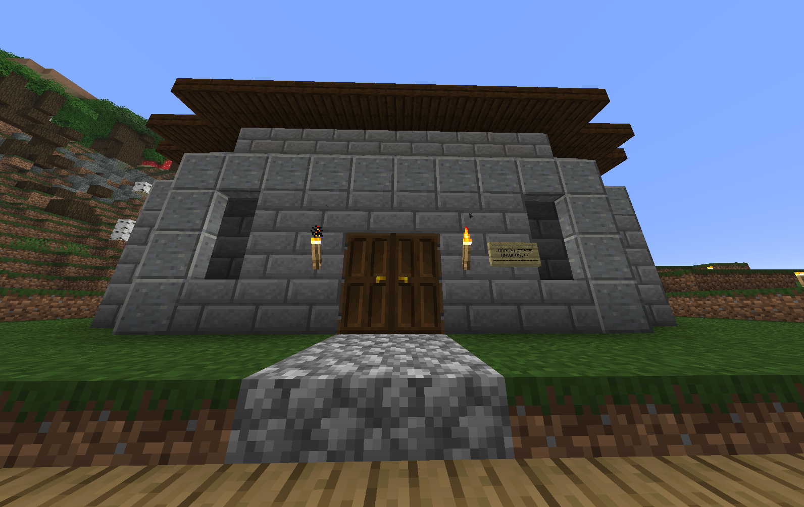

EDITIE VAN VANDAAG: OPBRENGSTEN, VERTREK EN NIEUWE PLANNEN
MARKT - Kyra's Kruitvat draait op volle toeren: de creeper farm produceert en de winkel heeft haar eerste klant al binnengeharkt, een veelbelovende start voor commerciële explosievenhandel.
SPELERSACTUEEL - De messiah Kyan10102 is weer vertrokken van de server. Burgers kijken reikhalzend uit naar zijn mogelijke wederkomst; de spanning stijgt.
INDUSTRIE - Boeren en smeden ontvangen de oproep om te beginnen met staal produceren voor nieuwe infrastructuurprojecten. Verwacht een toename in grootschalige bouw.

INRICHTING - De infrastructuur van Jiangxi State University is klaar. Er kunnen nu weer lessen worden gegeven en verwacht wordt dat dit de lokale lore en wetenschap zal versterken.
🗑️ Afval- en ophaaltijden
- Papierbak: donderdag om 08:00 (behalve voor abonnementhouders 125L: maandag om 10:00)
- Restafval: 09:00 elke 2 weken op zaterdag (huisnummer 72: 10:00 elke 4 weken op zondag)
- Plastic: elke week op hetzelfde tijdstip als papier
Tip: Controleer je abonnement als je afwijkende ophaaltijden hebt.